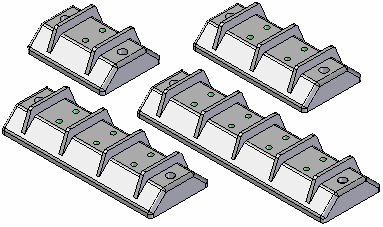
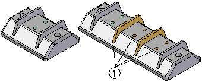
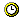

Families of parts
A family of parts is a collection of similar parts in different sizes or with slightly different detailing features. A family of parts can be defined with both synchronous and ordered features.
For example, you may use several different electrical terminal blocks in an assembly.

You can construct one source terminal block in Solid Edge Part, then use the Family of Parts Edit Table dialog box to specify the terminal configuration for each family member. This allows you to manage all the necessary information for a part family in one document using a spreadsheet format. To display the Family of Parts Edit Table dialog box, click the Edit Table button on the Family of Parts page.
You can add, remove, rename, copy, and edit members with the Family of Parts Edit Table dialog box.
Individual family members are defined by typing a member name, then suppressing features or constructions, and setting variable values. To display a family member in the graphic window, select its column heading on the Family of Parts Edit Table dialog box, then click the Apply button.
A Family of Parts tutorial is available to help you learn how to create, edit, and populate a family of parts.
Family of Parts is not available when more than one design body exists in a part or sheet metal document.
Using family members in assemblies and drawings
When working with families of parts, you should not place the source part document into an assembly or a drawing. Use the Populate Members button on the Family of Parts Edit Table dialog box to create new documents for individual family members. You can then place the member documents into an assembly or a drawing.
There are several reasons for not placing the source document into an assembly. The geometry in the source document can change depending on which family of parts member is activated. Also, you can define unique file properties for each member document. This allows you to assign a unique part number, title, project, and so on for each member which can then be used to populate a parts list or bill of materials.
Design Intent
You can use Design Intent to control the behavior of the synchronous model when applying variable edits to synchronous faces. Each member has its own set of Design Intent relationships.
Synchronous constructions
Synchronous construction features can be included in a member. If a synchronous construction feature is displayed when the member is populated, then the construction feature is included in the populated member. All construction surfaces (synchronous and ordered) are included together in a constructions part copy feature in the populated member.
Suppressing ordered features and constructions
You can specify the ordered features and ordered constructions you want to suppress on individual members without affecting the other members of the family. For example, a terminal block designed for one pair of wires would not need the pattern of holes and ribs (1) that terminal blocks for two or more pairs of wires would require.

The Family of Parts Edit Table dialog box lists all the features and constructions defined for the Source part in the Features and Constructions sections.
To specify which features or constructions you want to suppress, on the Family of Part Edit Table dialog box, click the cell that aligns with the family member and the feature or construction you want to suppress, then click the Suppress Features button on the dialog box. To unsuppress a feature, select the appropriate cell, then click the Unsuppress Features button.
You can also use the shortcut menu commands on the Family of Parts Edit Table dialog box to suppress and unsuppress features.
Using variables
You can use variables to control feature sizes for individual members of the family. You can edit the value for graphically displayed variables, such as dimensions, or non-graphic variables, such as the material thickness and bend radius of a sheet metal part.
The Family of Parts Edit Table dialog box lists all the variables defined for the Source part in the Variables section. You define a new variable value for a member part by clicking the appropriate cell, typing a new value and then pressing the Enter key.
Suppression variables
When you edit the value for a suppression variable, the current value of the suppression variable takes precedence if you specify the feature is suppressed for a family member. For example, if the current value of the suppression variable specifies that the feature is displayed, then the feature is displayed for the family member, even if you specify the feature is suppressed. For more information on suppression variables, see the Add Suppression Variable command topic.
Using unitless variables
When you create new variables for part families, be careful to use the correct unit type. If you need to include a unitless value in the right side of a formula, define it as a separate, scalar variable first. Then use that scalar variable in your formula (instead of using the value directly). For example, if you want to set the circumference of a gear equal to the number of teeth times 4 mm, save the number of teeth as a scalar variable first:
Number_of_Teeth=40
Then create the circumference formula using the variable name rather than its numeric value:
Circumference=Number_of_Teeth x 4mm
To change the circumference, simply change the value of the Number_of_Teeth variable.
Saving changes to the Family of Parts Edit Table
When you define individual member characteristics by editing cell values in the Family of Parts Edit Table dialog box, you must click the Save Table Data button on the dialog box to save the changes you made.
Applying a member
After a member definition is made, click the Apply button to open a Preview window. The preview window contains a preview icon . Only one preview window can be open at a time. This allows you to see what the member looks like and also will provide a warning if the member definition has failed. Close the preview window when you are finished previewing the member. No member is created with the Apply button.
Setting the folder location for family members
The Set Path button on the Family of Parts Edit Table dialog box allows you to specify a folder for each of the member documents. Click the column heading for one or more members, then click the Set Path button. You can then use the Browse for Folder dialog box to define the folder location.
You can use the Ctrl key on the keyboard to select multiple path cells at one time. To allow other users access to the family members, place them in a folder on a network share.
Populating member files
After you have defined names, feature suppression, and variable values for part family members, you can use the Populate Members button on the Family of Parts Edit Table dialog box to save each member as a separate document.
To create new part documents for all the family members listed, first click the Select All Members button on the Family of Parts Edit Table dialog box. Then click the Populate Members button to create the member documents. These documents are associative to the source part.
To create new part documents for one or more family members, click the column heading for the first family member on the Family of Parts Edit Table dialog box. Hold the Ctrl key down, then select the column headings for the other family members. Then click the Populate Members button to create the member documents.
You can also select one or more column headings, then click Populate Member on the shortcut menu.
You can also use the Part Copy command to place a single family member into a document. Use the Family of Parts Member option on the Part Copy Parameters dialog box to select the family member you want to place.
Family member status
The symbols in the Status column in the Family of Parts Edit Table dialog box reflect the current status of each member of the family. The following table explains the symbols used:
|
Legend |
|
|---|---|
 |
The file has not been created. |
 |
The file is up to date. |
 |
The file needs updating. |
 |
The file cannot be found. |
|
An error has occurred in the creation or update of the file. |
Changing a family of parts
To make design changes in a part family, you should edit the source part document and then update the individual member documents. Select the member documents that need updating, then click the Save Table Data button.
Shortcut menu commands
An extensive array of shortcut menu commands are available with the Family of Parts Edit Table dialog box. These commands are context-sensitive. In other words, the commands which are available depends on what is selected.
Family of Parts page functions
Many of the same functions that are available in the Family of Parts Edit Table dialog box are also available using the Family of Parts page on PathFinder. For example, you can create, copy, rename, and delete family members using the Family of Parts page.
To display a family member in the graphic window, select the member name from the list in the Family of Parts page, then click the Apply button.
You cannot create the member files using the Family of Parts page.
You can only view the suppressed feature and variable parameters for one family member at a time using the Family of Parts page. To view feature and variable parameters for a family member, select it from the list.
The workflow for defining suppressed features and editing variables differs in some respects from the Family of Parts Edit Table dialog box. Those differences are discussed below.
Suppressing features in the Family of Parts page
To suppress features for a family member, select the family member from the list, then select the features in the application window or on PathFinder. Then click the Suppress Features button on the Family of Parts page.
To remove a feature from the Suppressed Features list, select it in the Suppressed Features list, then click the Unsuppress Features button. When you add or remove features from the Suppressed Features list, only the active member is affected.
Defining variables in the Family of Parts page
To add a variable to the list, select it in the application window or in the Variable Table, then click the Add Variables button on the Family of Parts page.
To remove a variable from the Variables list, select the variable in the list, then click the Remove Variables button. When you add or remove a variable from the Variables list, the variable is added to or removed from all members.
The Family of Parts page and the Family of Parts Edit Table dialog box are automatically synchronized so you make the changes you want in either location.
Automatic Family of Parts Dimension Tables
The Family of Parts Table command provides a convenient way to create and manage dimension tables derived from a family of parts. The drawing table contains the dimensional values associated with all family members.
The family of parts table lists family member location and size data by row. Family variable labels are shown as column headings. You can easily customize the table by making formatting changes, and you can insert user-defined columns into the table and extract other model information into them.
You also can link the family member variables to dimensions on the drawing. This automatically copies the dimension variable name to the drawing. It also ensures that the drawing dimensions are associative to the member data in the family of parts.
To learn more, see Family of parts dimension tables on drawings.
Defining unique document properties for family of part members
You can use the Property Manager command on the Tools menu to define unique document properties for individual family members in a family of parts. For example, you may want to define a unique Title, Document Number, or Material for each family member.
After you populate the member files, you can use the Property Manager command when the source part is open to define and edit the document properties for individual family members. For more information, see the Property Manager command Help topic.